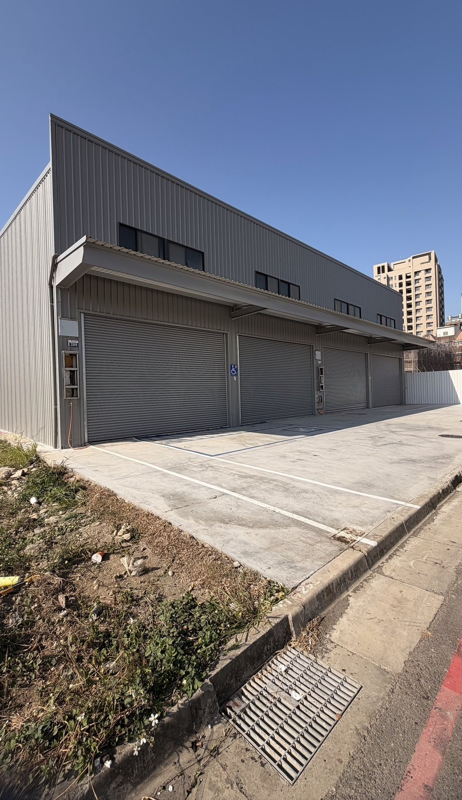
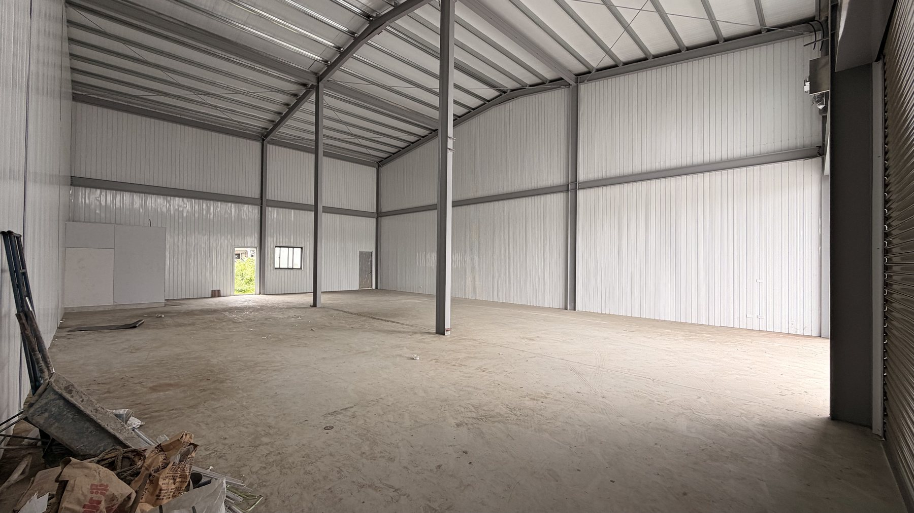
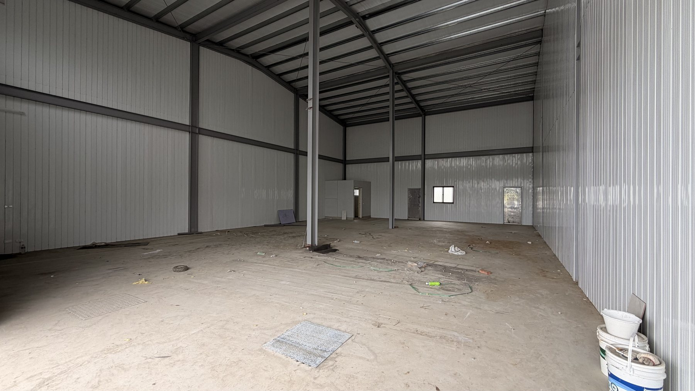
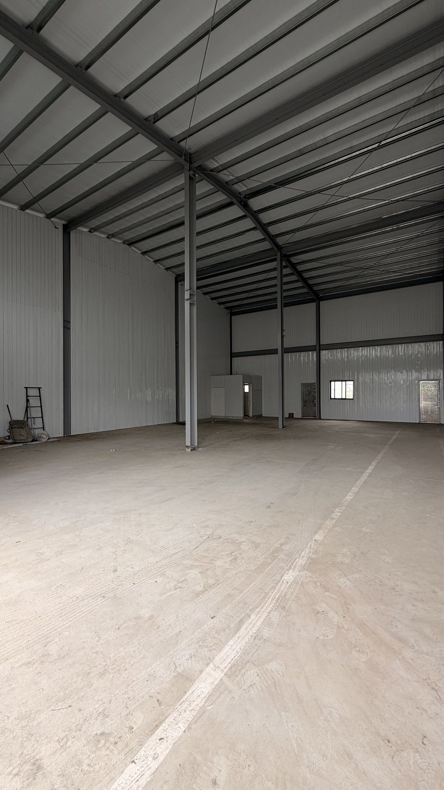

台中市南屯區萬和南一路 209 號
88,000元 / 月 / 間（未稅）
- 單層室內
- 約 45坪
- 挑 高
- 約 8米
- 面 寬
- 約 6米
- 深 度
- 約 18米
- 單元數
- 共 4間
- 4 間合併一樓
- 約 180坪
- 4 間月租
- 352,000元
- 含夾層概估
- 約 250～300坪
- 一個鐵門為一個單位，可單間承租，亦可多間或 4 間一起承租。
- 全新鋼構廠房，屋況新、空間方正、無畸零角，好規劃、好配置動線。
- 挑高約 8 米，足以在一樓作業空間上方增設夾層作為二樓辦公室， 形成「一樓載重作業＋二樓辦公」的使用配置（夾層施作須經屋主同意）。
- 4 間可打通合併，一樓約 180 坪、月租 352,000 元；加計夾層辦公後使用面積約 250～300 坪。
- 一樓為混凝土地坪，地面平整無高低差、可直接行走堆高機； 設計載重規範現勘時向屋主取得後提供。
- 門前混凝土鋪面可停車，進出動線順暢，貨車迴轉不受限。
- 坪數含室外法定停車面積；南屯優質地段，連結主要幹道便利。


